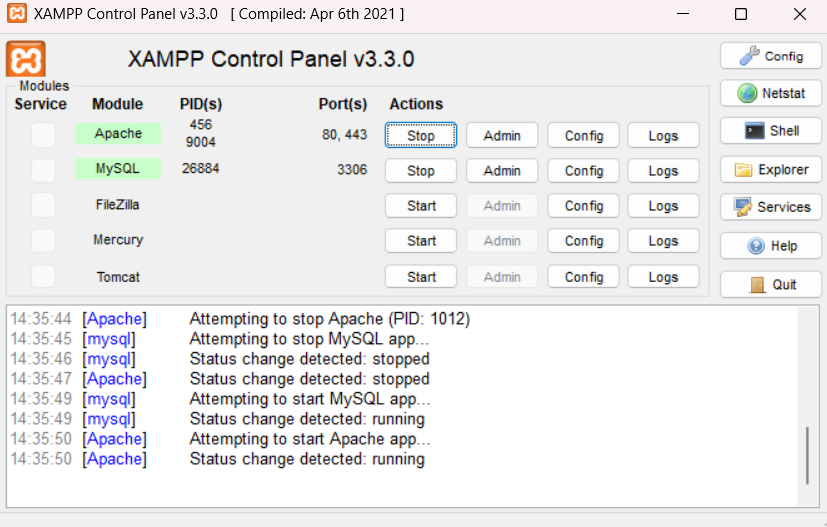
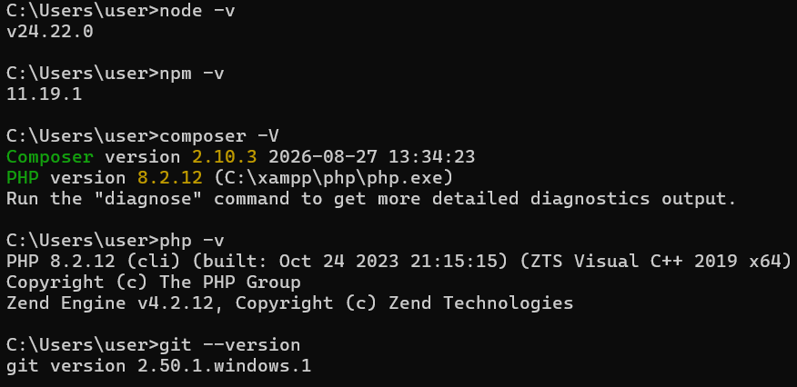
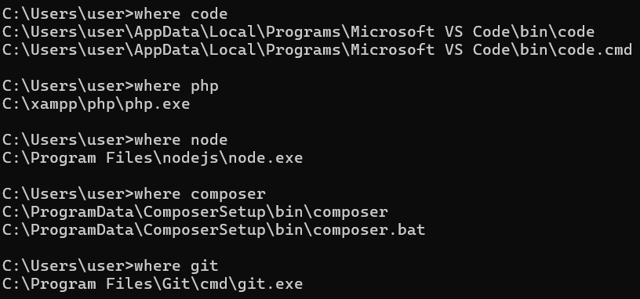
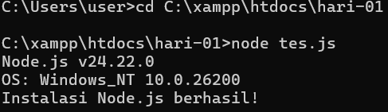
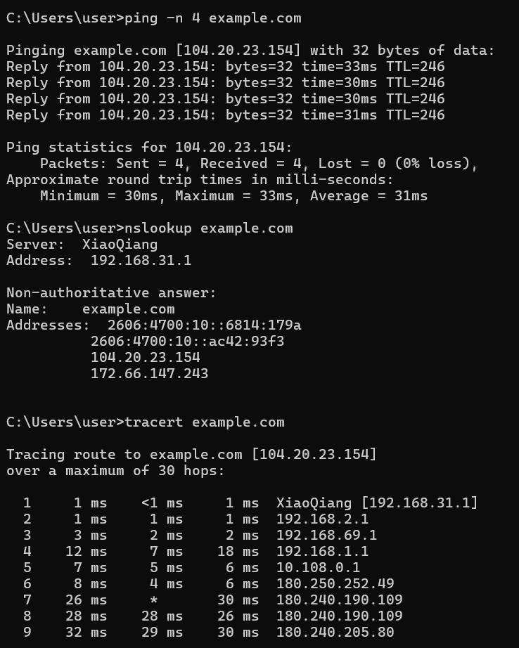
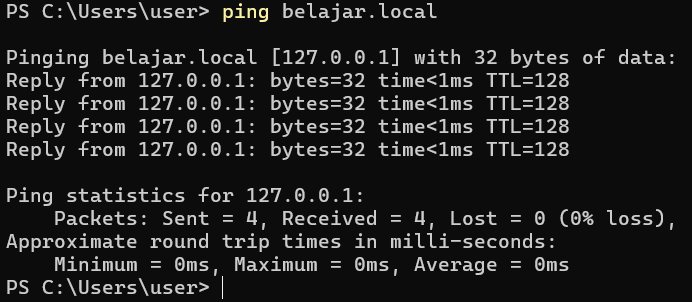

HTML5 dan Semantik
- Struktur dokumen dan elemen semantik
- Tabel dan form dengan validasi HTML5
- Aksesibilitas dasar dan SEO
Faaiza Muqorribati Lil'Aaliea
Calon Junior Web Programmer yang sedang belajar membuat website dengan HTML, CSS, JavaScript, dan PHP.

Saya sedang mengikuti diklat Junior Web Programmer. Situs ini adalah Proyek 1 saya: kerangka halaman portofolio yang dibuat dengan HTML5 semantik.






| Tools | Fungsi | Versi |
|---|---|---|
| Visual Studio Code | Editor kode | 1.142.0 |
| XAMPP (Apache dan PHP) | Server web lokal | Apache 2.4.58, PHP 8.2.12 |
| Node.js | Menjalankan JavaScript di luar browser | v24.22.0 |
| Composer | Mengelola library PHP | 2.10.3 |
| Git | Version control | 2.50.1 |